Optic flow task¶
This notebook illustrates the optic flow task and how to use it with our pretrained fly visual system model and decoder.
The Sintel dataset¶
We use the Sintel dataset to train our models as described in the paper. More infos about the Sintel dataset can be found on the official Sintel website: http://sintel.is.tue.mpg.de/.
import matplotlib.pyplot as plt
import numpy as np
import torch
from flyvis.datasets.sintel import MultiTaskSintel
from flyvis.analysis.animations.sintel import SintelSample
The class MultiTaskSintel loads, preprocesses, renders, and augments the sintel data. It adheres to the pytorch dataset primitive. It provides the interface to the input data and the output data for the flyvis networks. Note: the fly-eye rendering we use here, we introduce in the notebook on creating custom stimuli already.
This is the full setting:
dataset = MultiTaskSintel(
tasks=["flow"],
boxfilter=dict(extent=15, kernel_size=13),
# Because the fly eye rendering is square
# and sintel is wide, we can crop sintel
# in width and render three sequences from one.
# This allows us to statically augment our dataset
# a bit already before we proceed with the random augmentations.
# We end up with 3 * 23 sequences.
vertical_splits=3,
n_frames=19,
center_crop_fraction=0.7,
dt=1 / 50,
augment=True,
# From sequences with more than n_frames, we randomly sample the start frame.
random_temporal_crop=True,
all_frames=False,
# We resample movie frames to the effective framerate given by 1/dt
resampling=True,
# We interpolate the flow arrows to 1/dt.
interpolate=True,
# We flip with equal probability (using one flip-axis).
p_flip=0.5,
flip_axes=[0, 1],
# We rotate with equal probability (using five fold rotation symmetry of the hex-grid).
p_rot=5 / 6,
# We randomly adjust contrast and brightness.
contrast_std=0.2,
brightness_std=0.1,
# We add random white noise pixelweise.
gaussian_white_noise=0.08,
gamma_std=None,
_init_cache=True,
unittest=False,
)
[2024-12-08 19:30:46] sintel_utils:331 Found Sintel at ../flyvis/data/SintelDataSet
# The `dataset.arg_df` tracks the sequence index, identity etc.
dataset.arg_df
| index | original_index | name | original_n_frames | |
|---|---|---|---|---|
| 0 | 0 | 0 | sequence_00_alley_1_split_00 | 50 |
| 1 | 1 | 0 | sequence_00_alley_1_split_01 | 50 |
| 2 | 2 | 0 | sequence_00_alley_1_split_02 | 50 |
| 3 | 3 | 1 | sequence_01_alley_2_split_00 | 50 |
| 4 | 4 | 1 | sequence_01_alley_2_split_01 | 50 |
| ... | ... | ... | ... | ... |
| 64 | 64 | 21 | sequence_21_temple_2_split_01 | 50 |
| 65 | 65 | 21 | sequence_21_temple_2_split_02 | 50 |
| 66 | 66 | 22 | sequence_22_temple_3_split_00 | 50 |
| 67 | 67 | 22 | sequence_22_temple_3_split_01 | 50 |
| 68 | 68 | 22 | sequence_22_temple_3_split_02 | 50 |
69 rows × 4 columns
Single sample¶
First, let’s chunk this into smaller digestable pieces.
dataset = MultiTaskSintel(
tasks=["flow"],
boxfilter=dict(extent=15, kernel_size=13),
vertical_splits=1,
dt=1 / 24,
augment=False,
)
[2024-12-08 19:30:51] sintel_utils:331 Found Sintel at ../flyvis/data/SintelDataSet
The first sample. For the target, the pixel-accurate motion vectors, the color indicates the direction of motion of the respective input pixel. The saturation indicates the magnitude of motion.
lum = dataset[0]["lum"]
flow = dataset[0]["flow"]
animation = SintelSample(lum[None], flow[None])
animation.animate_in_notebook()
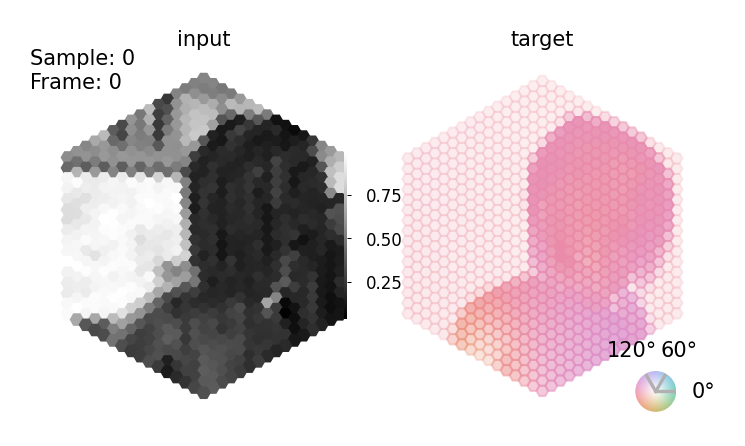
Sintel has more groundtruth annotations. We support depth and flow because we know with some confidence that these are relevant for the fly.
dataset = MultiTaskSintel(
tasks=["depth"],
boxfilter=dict(extent=15, kernel_size=13),
vertical_splits=1,
dt=1 / 24,
augment=False,
)
[2024-12-08 19:30:58] sintel_utils:331 Found Sintel at ../flyvis/data/SintelDataSet
[2024-12-08 19:30:58] sintel_utils:331 Found Sintel at ../flyvis/data/SintelDataSet
lum1 = dataset[0]["lum"]
depth1 = dataset[0]["depth"]
animation = SintelSample(lum1[None], depth1[None])
animation.animate_in_notebook()
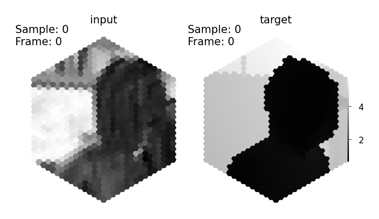
Augmenting the dataset step-by-step¶
We apply rich augmentations to the dataset of naturalistic sequences because the dataset is otherwise relatively small. This might lead to overfitting to, e.g., predicting motion mostly into well-represented directons or of objects of specific contrasts etc. Using rich augmentations, we ‘ask’ the network to generalize better and invariantly compute motion regardless of direction, contrast, brightness, pixel noise, temporal appearance etc.
Vertical splits¶
First, we split each sequence into three sequences vertically to leverage a wider extent of the video than if we would only render the center. We precompute these renderings.
from flyvis.analysis.visualization.plots import quick_hex_scatter
dataset = MultiTaskSintel(
tasks=["flow"],
boxfilter=dict(extent=15, kernel_size=13),
vertical_splits=3,
dt=1 / 24,
augment=False,
)
[2024-12-08 19:31:04] sintel_utils:331 Found Sintel at ../flyvis/data/SintelDataSet
Sintel has 23 movie sequences originally.
len(np.unique(dataset.arg_df.original_index))
23
Each original sequence is 436 pixel in height times 1024 pixel in width in cartesian coordinates.
sequence = dataset.cartesian_sequence(0, vertical_splits=1, center_crop_fraction=1.0)
print(sequence.shape)
(1, 49, 436, 1024)
With the vertical crops, we end up with 3 * 23 sequences. The dataset.arg_df tracks the sequence index, identity etc.
dataset.arg_df
| index | original_index | name | original_n_frames | |
|---|---|---|---|---|
| 0 | 0 | 0 | sequence_00_alley_1_split_00 | 50 |
| 1 | 1 | 0 | sequence_00_alley_1_split_01 | 50 |
| 2 | 2 | 0 | sequence_00_alley_1_split_02 | 50 |
| 3 | 3 | 1 | sequence_01_alley_2_split_00 | 50 |
| 4 | 4 | 1 | sequence_01_alley_2_split_01 | 50 |
| ... | ... | ... | ... | ... |
| 64 | 64 | 21 | sequence_21_temple_2_split_01 | 50 |
| 65 | 65 | 21 | sequence_21_temple_2_split_02 | 50 |
| 66 | 66 | 22 | sequence_22_temple_3_split_00 | 50 |
| 67 | 67 | 22 | sequence_22_temple_3_split_01 | 50 |
| 68 | 68 | 22 | sequence_22_temple_3_split_02 | 50 |
69 rows × 4 columns
_ = plt.imshow(sequence[0, 0], cmap=plt.cm.binary_r)
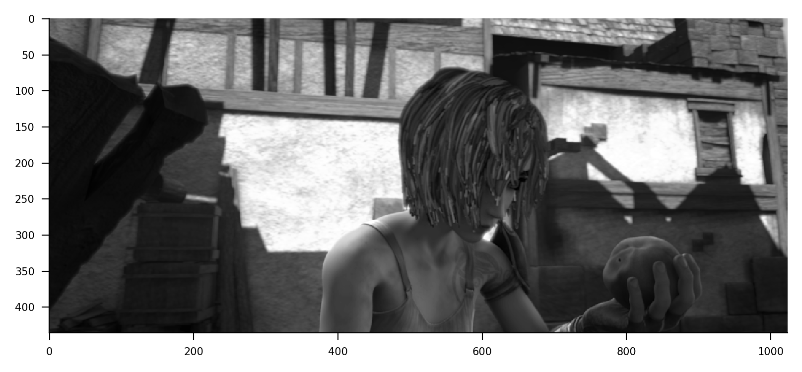
fig, axes = plt.subplots(1, 3)
_ = quick_hex_scatter(dataset[0]['lum'][0].flatten(), fig=fig, ax=axes[0], cbar=False)
_ = quick_hex_scatter(dataset[1]['lum'][0].flatten(), fig=fig, ax=axes[1], cbar=False)
_ = quick_hex_scatter(dataset[2]['lum'][0].flatten(), fig=fig, ax=axes[2], cbar=False)
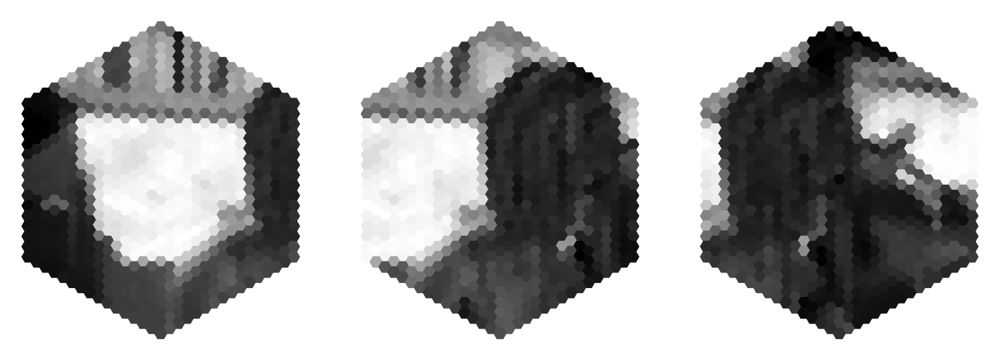
Random temporal crops¶
We train on 19 frames ~ 792ms movie. Most sequences have 49 frames. To use the whole temporal content, we stochastically sample start and end frame ~ ((1, 19), (2, 20), …, (31, 49)).
dataset = MultiTaskSintel(
tasks=["flow"],
boxfilter=dict(extent=15, kernel_size=13),
vertical_splits=3,
n_frames=19,
dt=1 / 24,
augment=True,
random_temporal_crop=True,
all_frames=False,
resampling=False,
interpolate=False,
p_flip=0,
p_rot=0,
contrast_std=None,
brightness_std=None,
gaussian_white_noise=None,
)
[2024-12-08 19:31:14] sintel_utils:331 Found Sintel at ../flyvis/data/SintelDataSet
# These two samples from the same original sequence should have stochastically different start and end frames.
lum1 = dataset[0]['lum']
lum2 = dataset[0]['lum']
animation = SintelSample(lum1[None], lum2[None], title2="input")
animation.animate_in_notebook()
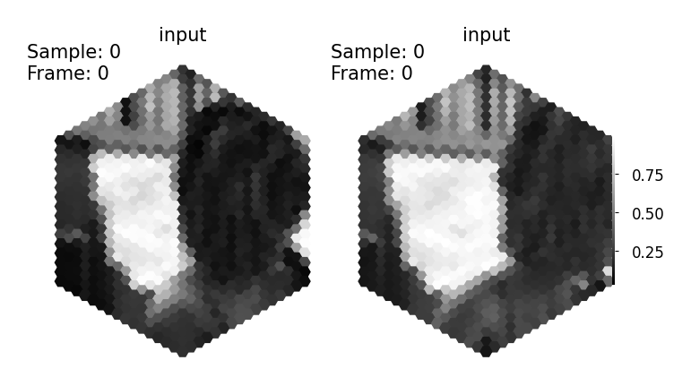
Flips and rotations¶
Next, we flip stochastically across 2 axes and or rotate a random number of times around the center. We implement this to be fast to do so at runtime.
dataset = MultiTaskSintel(
tasks=["flow"],
boxfilter=dict(extent=15, kernel_size=13),
vertical_splits=3,
n_frames=19,
dt=1 / 24,
augment=True,
random_temporal_crop=False,
all_frames=False,
resampling=False,
interpolate=False,
p_flip=1 / 2,
p_rot=5 / 6,
contrast_std=None,
brightness_std=None,
gaussian_white_noise=None,
)
[2024-12-08 19:31:22] sintel_utils:331 Found Sintel at ../flyvis/data/SintelDataSet
# These two samples from the same original sequence should have stochastically different orientation.
lum1 = dataset[0]['lum']
lum2 = dataset[0]['lum']
animation = SintelSample(lum1[None], lum2[None], title2="input")
animation.animate_in_notebook()
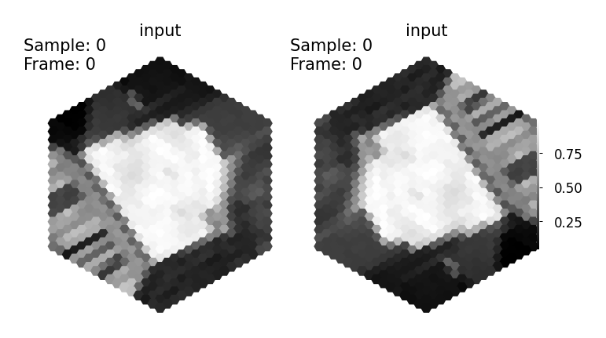
Flow vectors need to be flipped and rotated accordingly.
# These two samples from the same original sequence should have stochastically different orientation.
data = dataset[0]
lum1 = data['lum']
flow1 = data['flow']
animation = SintelSample(lum1[None], flow1[None])
animation.animate_in_notebook()
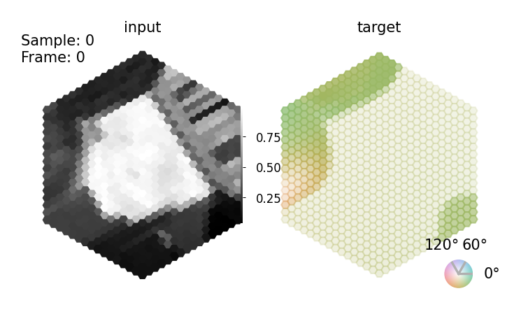
Further augmentations¶
Besides that, we also augment the input with random contrasts and brightnesses and random gaussian pixel noise, while the motion stays the same. This pretends that the same motion takes place under different illumination conditions and signal to noise ratios.
dataset = MultiTaskSintel(
tasks=["flow"],
boxfilter=dict(extent=15, kernel_size=13),
vertical_splits=3,
n_frames=19,
dt=1 / 24,
augment=True,
random_temporal_crop=False,
all_frames=False,
resampling=False,
interpolate=False,
p_flip=0,
p_rot=0,
contrast_std=0.2,
brightness_std=0.1,
gaussian_white_noise=0.08,
)
[2024-12-08 19:31:35] sintel_utils:331 Found Sintel at ../flyvis/data/SintelDataSet
# These two samples from the same original sequence have
# stochastically different contrast, brightness and pixel-wise noise.
lum1 = dataset[0]['lum']
lum2 = dataset[0]['lum']
animation = SintelSample(lum1[None], lum2[None], title2="input")
animation.animate_in_notebook()

Framerate of the dataset and integration time step¶
The Sintel dataset is originally rendered at 24 frames per second, i.e., one frame every 42ms. The fruit fly neurons are able to respond to temporal differences as fast as 5-20ms. Therefore, we resample every frame multiple times to pretend that the movie was originally sampled at such a faster framerate. For the motion fields, we interpolate flow vectors in time instead of resampling them, which hopefully gives a better learning signal to the network. We have to trade-off speed of the numerical integration and memory consumption during optimization with the simulation accuracy by choosing time steps between 5-20ms. We chose to train networks at the upper bount of 20ms and evaluate them more accurately at 5-10ms.
dataset = MultiTaskSintel(
tasks=["flow"],
boxfilter=dict(extent=15, kernel_size=13),
vertical_splits=3,
n_frames=19,
dt=1 / 50,
augment=False,
resampling=True,
interpolate=True,
)
[2024-12-08 19:31:42] sintel_utils:331 Found Sintel at ../flyvis/data/SintelDataSet
# Now, every input frame appears twice and target frames are interpolated.
data = dataset[0]
lum1 = data['lum']
flow1 = data['flow']
animation = SintelSample(lum1[None], flow1[None])
animation.animate_in_notebook()
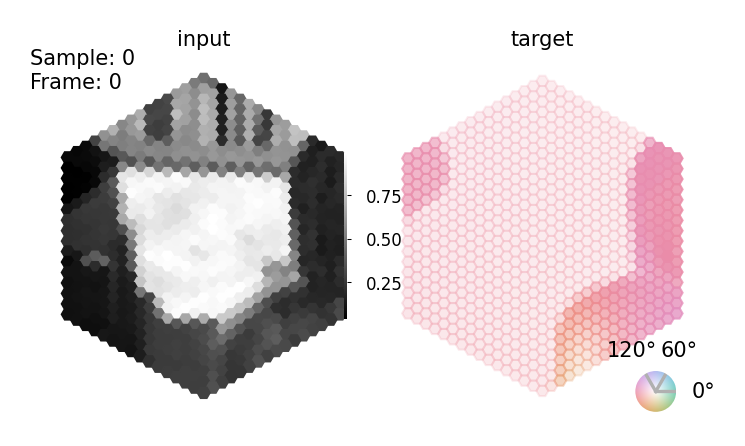
Computing responses to the Sintel data¶
Before we get to training a network, we look at a few responses to these type of sequences of individual neurons.
from flyvis.network import NetworkView, Network
from flyvis.utils.activity_utils import LayerActivity
from flyvis.datasets.sintel import MultiTaskSintel
# new network instance
network = Network()
# Alternative: uncomment to use a pretrained network
# network_view = NetworkView(results_dir / "flow/0000/000")
# network = network_view.init_network(network)
[2024-12-08 19:31:59] network:222 Initialized network with NumberOfParams(free=734, fixed=2959) parameters.
layer_activity = LayerActivity(None, network.connectome, keepref=True)
dataset = MultiTaskSintel(
tasks=["flow"],
boxfilter=dict(extent=15, kernel_size=13),
vertical_splits=1,
n_frames=19,
dt=1 / 50,
augment=False,
resampling=True,
interpolate=True,
)
[2024-12-08 19:32:04] sintel_utils:331 Found Sintel at ../flyvis/data/SintelDataSet
stationary_state = network.fade_in_state(1.0, dataset.dt, dataset[0]["lum"][[0]])
responses = network.simulate(
dataset[0]["lum"][None], dataset.dt, initial_state=stationary_state
).cpu()
plt.figure(figsize=[3, 2])
layer_activity.update(responses)
r = layer_activity.central.T4c.squeeze().numpy()
time = np.arange(0, r.shape[0], 1) * dataset.dt
plt.plot(time, r)
plt.xlabel("time in s")
plt.ylabel("voltage (a.u.)")
plt.title("response of central T4c cell")
Text(0.5, 1.0, 'response of central T4c cell')
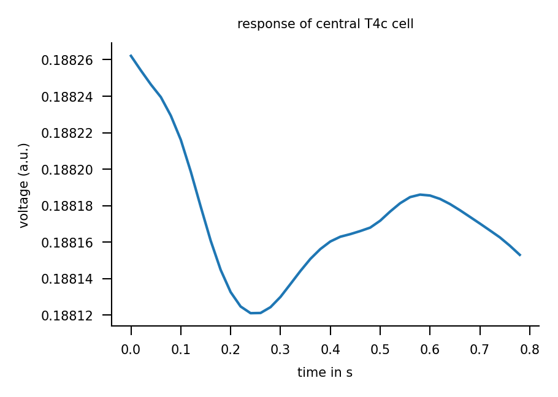
Decoding the task from neural activity¶
We need to predict the pixel-accurate flow field that Sintel gives us. For that we decode the voltages of a bunch of cell types. The decoder and the network are trained end-to-end. Here an example of a forward pass through the whole pipeline in code.
from flyvis.datasets.sintel import MultiTaskSintel
from flyvis.task.decoder import DecoderGAVP
network = Network()
[2024-12-08 19:32:15] network:222 Initialized network with NumberOfParams(free=734, fixed=2959) parameters.
decoder = DecoderGAVP(network.connectome, shape=[8, 2], kernel_size=5)
[2024-12-08 19:32:20] decoder:282 Initialized decoder with NumberOfParams(free=7427, fixed=0) parameters.
[2024-12-08 19:32:20] decoder:283 DecoderGAVP(
(base): Sequential(
(0): Conv2dHexSpace(34, 8, kernel_size=(5, 5), stride=(1, 1), padding=(2, 2))
(1): BatchNorm2d(8, eps=1e-05, momentum=0.1, affine=True, track_running_stats=True)
(2): Softplus(beta=1, threshold=20)
(3): Dropout(p=0.5, inplace=False)
)
(decoder): Sequential(
(0): Conv2dHexSpace(8, 3, kernel_size=(5, 5), stride=(1, 1), padding=(2, 2))
)
(head): Sequential()
)
dataset = MultiTaskSintel(
tasks=["flow"],
boxfilter=dict(extent=15, kernel_size=13),
vertical_splits=1,
all_frames=True,
dt=1 / 50,
augment=False,
resampling=True,
interpolate=True,
)
[2024-12-08 19:32:20] sintel_utils:331 Found Sintel at ../flyvis/data/SintelDataSet
data = dataset[0]
lum = data["lum"]
flow = data["flow"]
stationary_state = network.fade_in_state(1.0, dataset.dt, lum[[0]])
responses = network.simulate(lum[None], dataset.dt, initial_state=stationary_state)
y_pred = decoder(responses)
We predict motion with an untrained decoder from an untrained network with randomly initialized parameters. We do not expect this to work.
animation = SintelSample(lum[None], flow[None], prediction=y_pred.detach().cpu())
animation.animate_in_notebook(frames=np.arange(lum.shape[0])[::10])
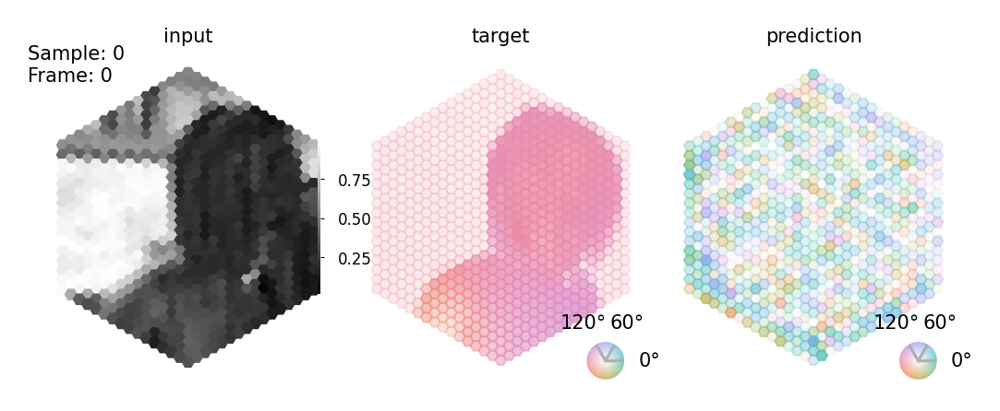
((y_pred - flow) ** 2).sqrt().mean()
tensor(0.9877, device='cuda:0', grad_fn=<MeanBackward0>)
Training network and decoder on a single batch¶
We now train the network on a single batch to validate that the pipeline works. We do not expect these networks to generalize their function.
from tqdm.notebook import tqdm
from torch.optim import Adam
from torch.utils.data import DataLoader
from flyvis.network import Network
from flyvis.task.decoder import DecoderGAVP
from flyvis.datasets.sintel import MultiTaskSintel
from flyvis.task.objectives import l2norm, epe
network = Network()
[2024-12-08 19:32:37] network:222 Initialized network with NumberOfParams(free=734, fixed=2959) parameters.
decoder = DecoderGAVP(network.connectome, shape=[8, 2], kernel_size=5)
[2024-12-08 19:32:42] decoder:282 Initialized decoder with NumberOfParams(free=7427, fixed=0) parameters.
[2024-12-08 19:32:42] decoder:283 DecoderGAVP(
(base): Sequential(
(0): Conv2dHexSpace(34, 8, kernel_size=(5, 5), stride=(1, 1), padding=(2, 2))
(1): BatchNorm2d(8, eps=1e-05, momentum=0.1, affine=True, track_running_stats=True)
(2): Softplus(beta=1, threshold=20)
(3): Dropout(p=0.5, inplace=False)
)
(decoder): Sequential(
(0): Conv2dHexSpace(8, 3, kernel_size=(5, 5), stride=(1, 1), padding=(2, 2))
)
(head): Sequential()
)
dataset = MultiTaskSintel(
tasks=["flow"],
boxfilter=dict(extent=15, kernel_size=13),
vertical_splits=1,
n_frames=19,
dt=1 / 50,
augment=False,
resampling=True,
interpolate=True,
)
[2024-12-08 19:32:42] sintel_utils:331 Found Sintel at ../flyvis/data/SintelDataSet
t_pre = 0.5
dt = 1 / 50
batch_size = 4
train_loader = DataLoader(dataset, batch_size=batch_size)
optimizer = Adam((*network.parameters(), *decoder.parameters()), lr=1e-5)
batch = next(iter(train_loader))
loss_fn = epe
epochs = 1000
errors = []
initial_state = network.steady_state(t_pre, dt, batch_size)
for e in tqdm(range(epochs)):
lum = batch["lum"]
flow = batch["flow"]
optimizer.zero_grad()
network.stimulus.zero()
network.stimulus.add_input(lum)
activity = network(network.stimulus(), dt=1 / 50, state=initial_state)
y_pred = decoder(activity)
batch_error = loss_fn(y_pred, flow)
errors.append(batch_error.cpu().item())
batch_error.backward()
optimizer.step()
if e % 10 == 0:
print(f"Epoch {e}: {batch_error.item()}")
0%| | 0/1000 [00:00<?, ?it/s]
Epoch 0: 10.636537551879883
Epoch 10: 10.621147155761719
Epoch 20: 10.607827186584473
Epoch 30: 10.599922180175781
Epoch 40: 10.590510368347168
Epoch 50: 10.582784652709961
Epoch 60: 10.57673168182373
Epoch 70: 10.57288932800293
Epoch 80: 10.56686019897461
Epoch 90: 10.563536643981934
Epoch 100: 10.561113357543945
Epoch 110: 10.557619094848633
Epoch 120: 10.553178787231445
Epoch 130: 10.550191879272461
Epoch 140: 10.545988082885742
Epoch 150: 10.545486450195312
Epoch 160: 10.54134464263916
Epoch 170: 10.540717124938965
Epoch 180: 10.537071228027344
Epoch 190: 10.53472900390625
Epoch 200: 10.531929016113281
Epoch 210: 10.529220581054688
Epoch 220: 10.526920318603516
Epoch 230: 10.524316787719727
Epoch 240: 10.522162437438965
Epoch 250: 10.519787788391113
Epoch 260: 10.518158912658691
Epoch 270: 10.516519546508789
Epoch 280: 10.513129234313965
Epoch 290: 10.511229515075684
Epoch 300: 10.509740829467773
Epoch 310: 10.506508827209473
Epoch 320: 10.505179405212402
Epoch 330: 10.502842903137207
Epoch 340: 10.5007963180542
Epoch 350: 10.497834205627441
Epoch 360: 10.496322631835938
Epoch 370: 10.495060920715332
Epoch 380: 10.493014335632324
Epoch 390: 10.491446495056152
Epoch 400: 10.48892879486084
Epoch 410: 10.489540100097656
Epoch 420: 10.485395431518555
Epoch 430: 10.483999252319336
Epoch 440: 10.481637954711914
Epoch 450: 10.47884464263916
Epoch 460: 10.478631019592285
Epoch 470: 10.476183891296387
Epoch 480: 10.475756645202637
Epoch 490: 10.473572731018066
Epoch 500: 10.471808433532715
Epoch 510: 10.471207618713379
Epoch 520: 10.468792915344238
Epoch 530: 10.466946601867676
Epoch 540: 10.465457916259766
Epoch 550: 10.462742805480957
Epoch 560: 10.462434768676758
Epoch 570: 10.460104942321777
Epoch 580: 10.457630157470703
Epoch 590: 10.456503868103027
Epoch 600: 10.454134941101074
Epoch 610: 10.453128814697266
Epoch 620: 10.450531959533691
Epoch 630: 10.448619842529297
Epoch 640: 10.446551322937012
Epoch 650: 10.444059371948242
Epoch 660: 10.44367504119873
Epoch 670: 10.437813758850098
Epoch 680: 10.437586784362793
Epoch 690: 10.436905860900879
Epoch 700: 10.432501792907715
Epoch 710: 10.430790901184082
Epoch 720: 10.428460121154785
Epoch 730: 10.423649787902832
Epoch 740: 10.42512321472168
Epoch 750: 10.422974586486816
Epoch 760: 10.418354034423828
Epoch 770: 10.41611099243164
Epoch 780: 10.413171768188477
Epoch 790: 10.408281326293945
Epoch 800: 10.405777931213379
Epoch 810: 10.401845932006836
Epoch 820: 10.395087242126465
Epoch 830: 10.390754699707031
Epoch 840: 10.386748313903809
Epoch 850: 10.381792068481445
Epoch 860: 10.376413345336914
Epoch 870: 10.371747016906738
Epoch 880: 10.367315292358398
Epoch 890: 10.363433837890625
Epoch 900: 10.357799530029297
Epoch 910: 10.35655403137207
Epoch 920: 10.350890159606934
Epoch 930: 10.347064971923828
Epoch 940: 10.342965126037598
Epoch 950: 10.339473724365234
Epoch 960: 10.334851264953613
Epoch 970: 10.330768585205078
Epoch 980: 10.325502395629883
Epoch 990: 10.32119369506836
plt.plot(errors)
[<matplotlib.lines.Line2D at 0x7f0b0d0730a0>]
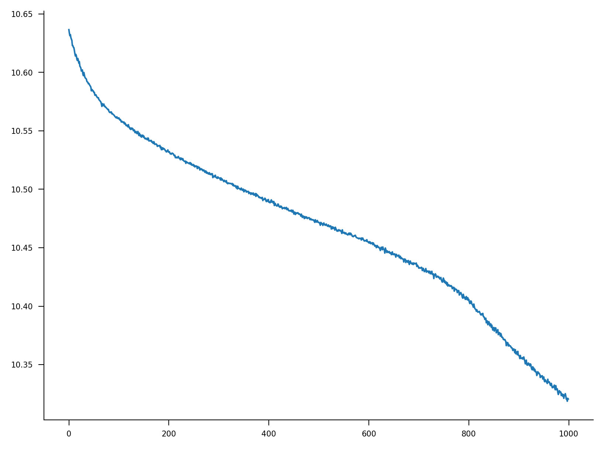
We expect that the prediction from this overfitted network on the sample it was trained on is ok.
data = dataset[0]
lum = data["lum"]
flow = data["flow"]
stationary_state = network.fade_in_state(1.0, dataset.dt, lum[[0]])
responses = network.simulate(lum[None], dataset.dt, initial_state=stationary_state)
y_pred = decoder(responses)
animation = SintelSample(lum[None], flow[None], prediction=y_pred.detach().cpu())
animation.animate_in_notebook()
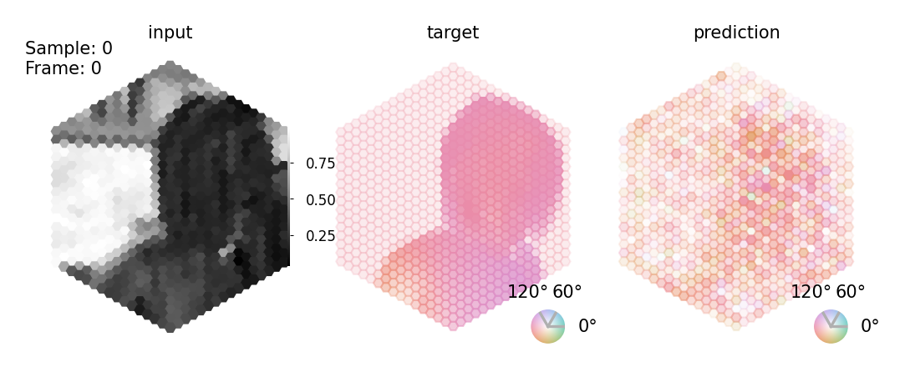
((y_pred - flow) ** 2).sqrt().mean()
tensor(0.7563, device='cuda:0', grad_fn=<MeanBackward0>)
Evaluating trained networks¶
from flyvis import results_dir
from flyvis.network import NetworkView
from flyvis.utils.activity_utils import LayerActivity
from flyvis.datasets.sintel import MultiTaskSintel
from flyvis.task.decoder import DecoderGAVP
# we load the best task-performing model from the presorted ensemble
network_view = NetworkView(results_dir / "flow/0000/000")
[2024-12-08 19:34:48] network_view:122 Initialized network view at ../flyvis/data/results/flow/0000/000
network = network_view.init_network()
[2024-12-08 19:34:56] network:222 Initialized network with NumberOfParams(free=734, fixed=2959) parameters.
[2024-12-08 19:34:56] chkpt_utils:36 Recovered network state.
network_view.dir.config.task.decoder
Namespace(
flow = Namespace(
type = 'DecoderGAVP',
shape = [8, 2],
kernel_size = 5,
const_weight = 0.001,
n_out_features = None,
p_dropout = 0.5
)
)
decoder = network_view.init_decoder()["flow"]
[2024-12-08 19:35:01] decoder:282 Initialized decoder with NumberOfParams(free=7427, fixed=0) parameters.
[2024-12-08 19:35:01] decoder:283 DecoderGAVP(
(base): Sequential(
(0): Conv2dHexSpace(34, 8, kernel_size=(5, 5), stride=(1, 1), padding=(2, 2))
(1): BatchNorm2d(8, eps=1e-05, momentum=0.1, affine=True, track_running_stats=True)
(2): Softplus(beta=1, threshold=20)
(3): Dropout(p=0.5, inplace=False)
)
(decoder): Sequential(
(0): Conv2dHexSpace(8, 3, kernel_size=(5, 5), stride=(1, 1), padding=(2, 2))
)
(head): Sequential()
)
[2024-12-08 19:35:01] chkpt_utils:65 Recovered flow decoder state.
dataset = MultiTaskSintel(
tasks=["flow"],
boxfilter=dict(extent=15, kernel_size=13),
vertical_splits=1,
all_frames=False,
n_frames=19,
dt=1 / 50,
augment=False,
resampling=True,
interpolate=True,
)
[2024-12-08 19:35:01] sintel_utils:331 Found Sintel at ../flyvis/data/SintelDataSet
data = [dataset[i] for i in range(4)]
lum = torch.stack([d["lum"] for d in data])
flow = torch.stack([d["flow"] for d in data])
stationary_state = network.fade_in_state(1.0, dataset.dt, lum[:, 0])
responses = network.simulate(lum, dataset.dt, initial_state=stationary_state)
y_pred = decoder(responses)
We expect this network to generalize across sequences. This network sees motion into all directions.
animation = SintelSample(lum, flow, prediction=y_pred.detach().cpu())
animation.animate_in_notebook()
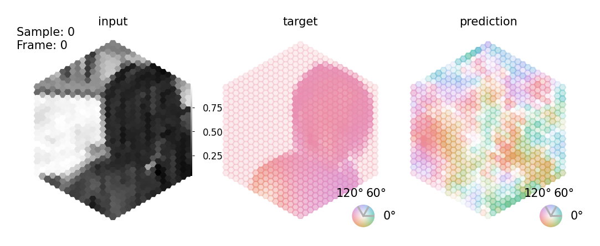
We expect the accuracy is not as good as the overfitted example because this network generalized across the whole-dataset.
((y_pred - flow) ** 2).sqrt().mean()
tensor(6.4274, device='cuda:0', grad_fn=<MeanBackward0>)
Evaluating ensembles¶
Last, we evaluated the task error of the 50 trained networks on a held out set of sequences. We evaluated the task error across all checkpoints during training and show the minimal one in the histrogram below. This checkpoint we analyse with respect to it’s tuning predictions as shown in the next notebooks.
from flyvis import EnsembleView
ensemble = EnsembleView("flow/0000")
Loading ensemble: 0%| | 0/50 [00:00<?, ?it/s]
[2024-12-08 19:35:21] ensemble:166 Loaded 50 networks.
ensemble.task_error_histogram()
(<Figure size 300x300 with 1 Axes>,
<Axes: xlabel='task error', ylabel='number models'>)
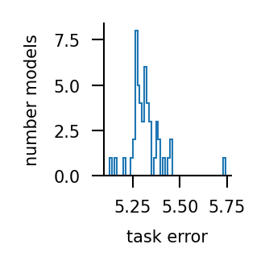